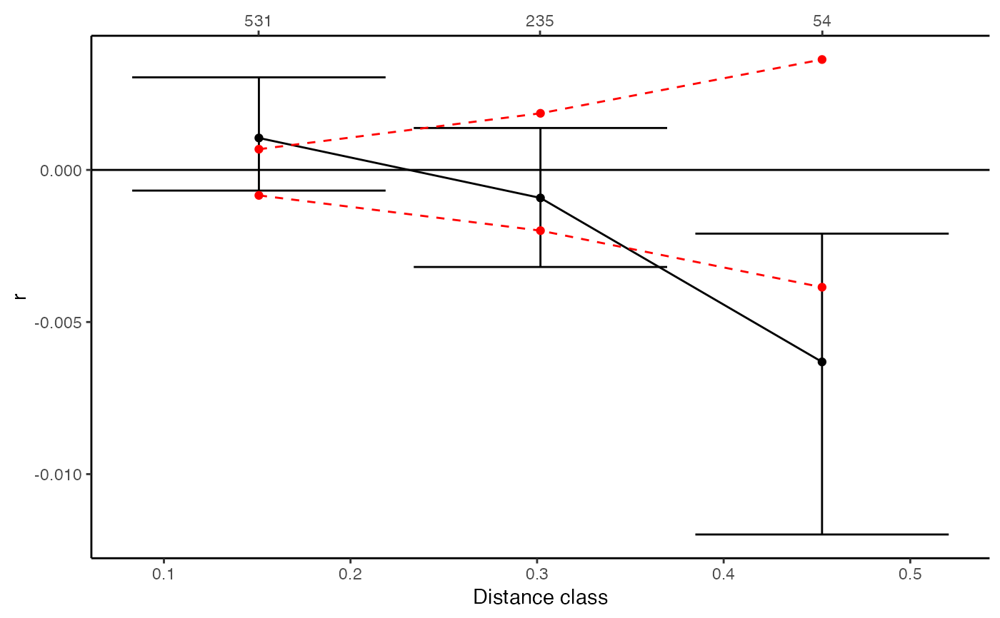

plot of mulitple Spatial autocorrelation analyses
gl.plot.multiSpaAC.RdThis function takes multiple outputs of gl.spatial.autoCorr and plots them to enable their graphical comparisons. If upper and lower estimates are present in the outputs, these are plotted as error bars around the r estimates.
Usage
gl.plot.multiSpaAC(
l.spa,
grp.var.name = "Pop",
plot_theme = theme_classic(),
outpath = tempdir(),
out_file_rootname = "ac.multiPlot",
verbose = NULL
)Arguments
- l.spa
The list of multiple gl.spatial.autoCorr outputs
- grp.var.name
The name to be used for the grouping variable
- plot_theme
User specified theme [default theme_dartR()].
- outpath
The path where to save the output
- out_file_rootname
The name of the root of the output file
- verbose
Verbosity: 0, silent or fatal errors; 1, begin and end; 2, progress log ; 3, progress and results summary; 5, full report [default NULL, unless specified using gl.set.verbosity].
Value
Returns the ggplot object Custodian: Carlo Pacioni -- Post to https://groups.google.com/d/forum/dartr
Details
The input is a list. If the list has names, these are used in the legend. If names are absent, these are internally created assuming that each element of the list represents different populations.
Examples
# Select one pop only
plat_Tent <- gl.keep.ind(platypus.gl,
ind.list = platypus.gl@ind.names[pop(platypus.gl) == "TENTERFIELD"],
mono.rm = TRUE)
#> Starting gl.keep.ind
#> Processing genlight object with SNP data
#> Warning: data include loci that are scored NA across all individuals.
#> Consider filtering using gl <- gl.filter.allna(gl)
#> Deleting all but the listed individuals T27, T35, T3, T11, T19, T28, T36, T4, T12, T20, T29, T5, T13, T21, T30, T38, T6, T14, T22, T31, T39, T7, T15, T23, T32, T40, T8, T16, T24, T33, T41, T1, T9, T17, T25, T34, T42, T2, T10, T18, T26
#> Deleting monomorphic loc
#> Locus metrics not recalculated
#> Completed: gl.keep.ind
#>
# Compute a simple distance matrix and reverse it so that correlated values
# indicated more similar individuals as we are used to see plots in GenAleEx
gd <- 1 - as.matrix(gl.dist.ind(plat_Tent, method = "Simple", plot.out = FALSE))
#> Starting gl.dist.ind
#> Processing genlight object with SNP data
#> Calculating simple matching distance
#> Returning a stat::dist object
#> Completed: gl.dist.ind
#>
# Replace the diagonal with zeros
diag(gd) <- 0
# Compute the (approx) geographical distance matrix
ggd <- as.matrix(dist(plat_Tent@other$latlon))
# Spatial autocorrelation
spa <- gl.spatial.autoCorr(gd, ggd, bins = 3, reps = 100,
permutation = TRUE, bootstrap = TRUE)
#> Starting gl.spatial.autoCorr
#>

#> Saving outputs
#>
# Does the same for the second pop
plat_Sev <- gl.keep.ind(platypus.gl,
ind.list = platypus.gl@ind.names[pop(platypus.gl) == "SEVERN_ABOVE"],
mono.rm = TRUE)
#> Starting gl.keep.ind
#> Processing genlight object with SNP data
#> Warning: data include loci that are scored NA across all individuals.
#> Consider filtering using gl <- gl.filter.allna(gl)
#> Deleting all but the listed individuals SUS20, SUS28, SUS36, SUS21, SUS29, SUS37, SUS22, SUS30, SUS38, SUS23, SUS31, SUS39, SUS24, SUS32, SUS40, SUS25, SUS33, SUS41, SUS26, SUS34, SUS19, SUS27, SUS35
#> Deleting monomorphic loc
#> Locus metrics not recalculated
#> Completed: gl.keep.ind
#>
# Compute a simple distance matrix and reverse it so that correlated values
# indicated more similar individuals as we are used to see plots in GenAleEx
gd_Sev <- 1 - as.matrix(gl.dist.ind(plat_Sev, method = "Simple", plot.out = FALSE))
#> Starting gl.dist.ind
#> Processing genlight object with SNP data
#> Calculating simple matching distance
#> Returning a stat::dist object
#> Completed: gl.dist.ind
#>
# Replace the diagonal with zeros
diag(gd_Sev) <- 0
# Compute the (approx) geographical distance matrix
ggd_Sev <- as.matrix(dist(plat_Sev@other$latlon))
# Spatial autocorrelation
spa_Sev <- gl.spatial.autoCorr(gd, ggd, bins = 3, reps = 100,
permutation = TRUE, bootstrap = TRUE)
#> Starting gl.spatial.autoCorr
#>
#> Saving outputs
#>
# Plot them together
gl.plot.multiSpaAC(list(TENTERFIELD=spa, SEVERN_ABOVE=spa_Sev))
#> Starting gl.plot.multiSpaAC
#>
 #> Saving outputs
#>
#> Saving outputs
#>